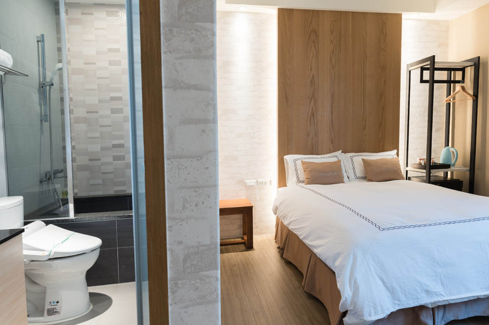
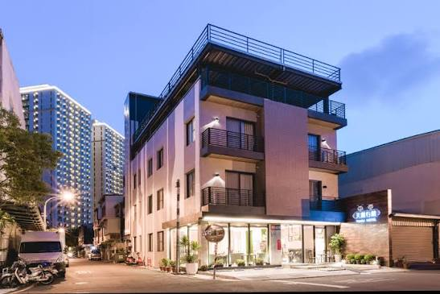
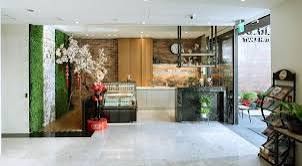
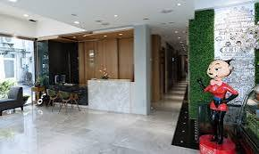
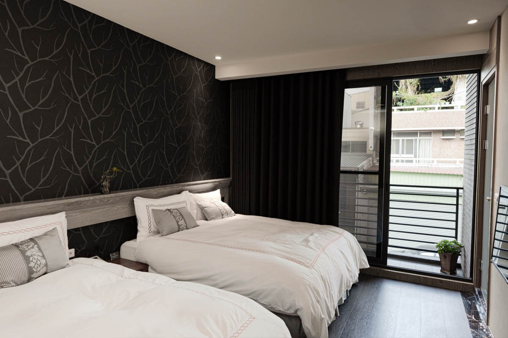
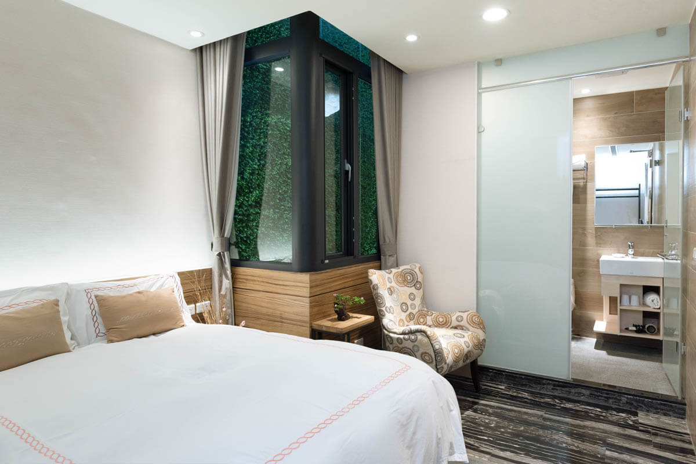
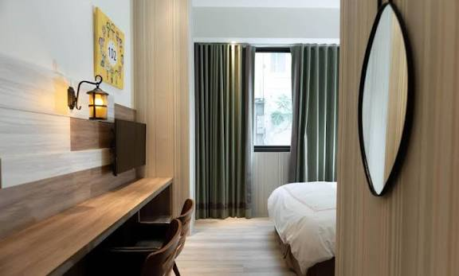
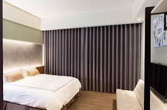
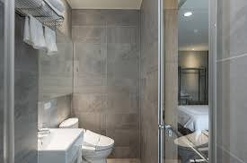

雙人客房
01 ／ ABOUT
鬧中取靜的
鬧中取靜的
府城日常
天麗行館藏在台南市中西區和真街的巷弄裡，走出門口就是府城最有生活感的街區。 海安路藝術街、藍晒圖文創園區近在咫尺，赤崁樓、安平老街、神農街也都在步行或短程車程之內。
我們把多餘的裝飾拿掉，留下乾淨的空間、好睡的床，還有一缸熱水。 旅行最好的休息方式，就是回到一個什麼都不用多想的房間——這就是天麗行館想給你的。

02 ／ SPACES
大廳一隅
水磨石地板、大理石櫃檯與一整面綠植牆，還有大廳裡總是迎賓的吉祥公仔——這是天麗行館真實的樣子。




03 ／ ROOMS
房型選擇
提供二人至四人房型，每間客房均配有獨立衣櫃、熱水壺與私人衛浴，並設有座式浴缸； 部分房型附設陽台，讓晨光與巷弄的生活感一同醒來。

四人客房房型配置與坪數依實際房況略有不同，詳細價格與空房請電話或透過下方訂房通路查詢。
更多房型風貌




04 ／ AMENITIES
設施與服務
公共區域 WiFi
全館無線網路覆蓋，旅途中隨時保持連線。
行李寄放服務
提前抵達或延後退房，皆可代為妥善保管行李。
附設停車場
館內備有停車空間，自駕遊府城更加從容。
交誼廳休憩區
提供旅人交流休憩的公共空間，放慢腳步片刻。
露台空間
戶外露台區域，享受台南溫暖日常的午後時光。
無障礙車位
提供無障礙停車空間，體貼每一位旅客的需求。
傳真 / 影印服務
商務旅客所需的基本文書服務，一應俱全。
每日早餐服務
招牌虱目魚粥的歐陸式早餐，詳見以下說明。
05 ／ AROUND
周邊景點
以天麗行館為起點，府城的老街、藝術與夜市生活都在不遠處。
步行可達
海安路藝術街
海安路藝術街
藍晒圖文創園區
巷弄壁面藝術與文創聚落，感受台南年輕世代的創作能量。
步行約 17 分
赤崁樓
府城最具代表性的歷史地標，漫步古蹟街區的最佳起點。
約 2 公里
台南孔廟
全台首學所在，感受古都深厚的文化底蘊。
車程約 5 分
神農街
老屋與燈籠交織的經典街景，白天黑夜各有風情。
車程約 5 分
花園夜市
花園夜市
武聖夜市
感受在地夜生活與台南小吃，體驗最道地的府城日常。
短程可達
安平老街
安平老街
安平古堡
沿海歷史聚落，府城最經典的一日散策路線。
06 ／ VOICES
旅人回饋
“巷弄裡的位置意外地安靜，晚上睡得特別好。
— 旅客常見回饋
“房間有座式浴缸，出差奔波一整天後，泡個澡整個人都放鬆了。
— 旅客常見回饋
“早餐的虱目魚粥，是對台南最溫暖的記憶之一。
— 旅客常見回饋
07 ／ BOOKING
訂房資訊
歡迎透過電話、LINE 直接與我們聯繫，或透過合作訂房平台查詢即時空房與優惠。
- 地址
- 台南市中西區和真街79號
- 傳真
- 06-350-7959
- LINE
- @tianli